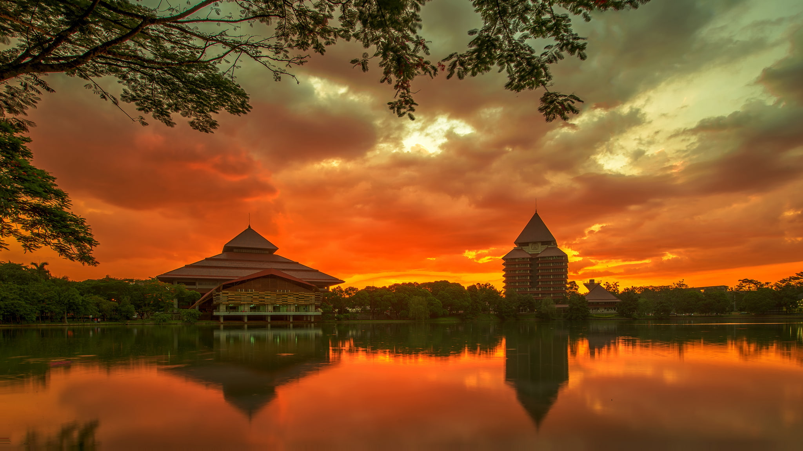
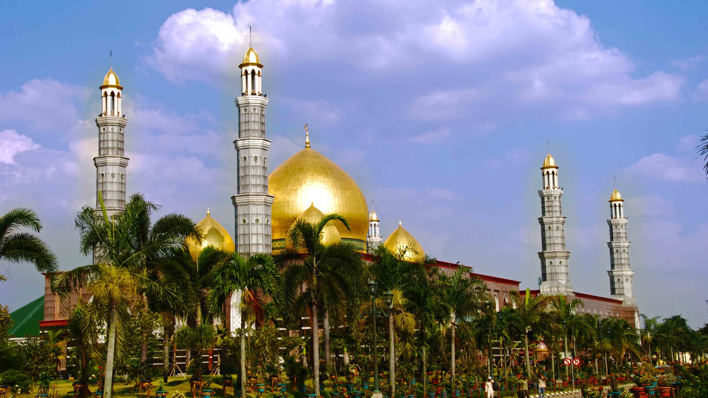
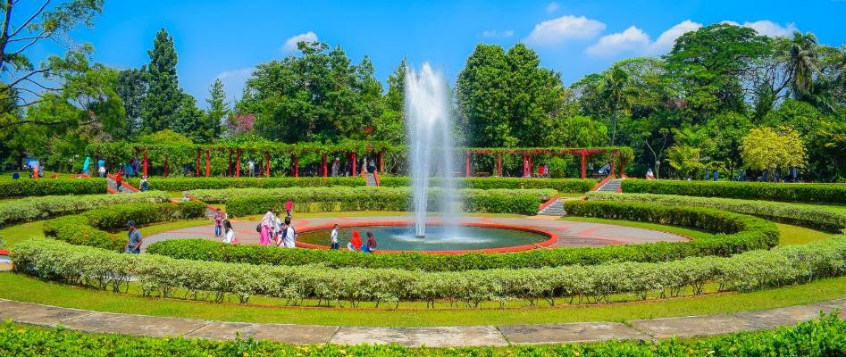

Sejarah

Foto UI Google
Kota Depok bermula dari sebuah Kecamatan yang berada di lingkungan Kawedanan (Pembantu Bupati)
wilayah Parung Kabupaten Bogor. Pada tahun 1976 perumahan mulai dibangun baik oleh Perum Perumnas
maupun pengembang yang kemudian diikuti dengan dibangunnya kampus Universitas Indonesia (UI), serta
meningkatnya perdagangan dan jasa yang semakin pesat sehingga diperlukan kecepatan pelayanan.
Perkembangan Depok yang begitu cepat menjadi perhatian bagi Pemerintah Orde Baru. Menteri Dalam
Negeri kala itu, Amir Machmud, mulai mengkaji peningkatan status Kecamatan Depok menjadi Kota
Administratif. Peningkatan status Kota Depok dilakukan agar pembangunan lebih tertata dan terarah
sebagai kota masa depan, ketimbang dikelola sepenuhnya oleh Kota Bogor yang hanya sebagai kecamatan
yang dipimpin oleh Camat.
Wisata
Apakah Anda tinggal di Depok, Jawa Barat, atau berencana untuk berkunjung ke kota ini? Jangan
melewatkan tempat-tempat wisata menarik dan populer yang ada di Depok. Kota yang terletak di
antara Jakarta dan Bogor ini memiliki beberapa rekomendasi tempat wisata,
Berikut ini
rekomendasi tempat wisata yang dapat anda kunjungi.
Masjid Kubah Emas / Dian Al-Mahri Depok

Kota Depok juga terkenal dengan wisata religinya. Salah satu tempat wisata tersebut adalah Masjid
Dian Al-Mahri. Masjid ini dibangun dengan ornamen dan arsitektur yang sangat cantik untuk
dilihat. Salah satu hal yang paling menarik dari masjid ini adalah memiliki kubah yang berwarna
emas.
Selain itu, Masjid Dian Al-Mahri juga memiliki lampu gantung yang sangat indah dan diimpor
langsung dari Italia. Masjid ini merupakan salah satu masjid tercantik dan termegah di kawasan
Asia Tenggara. Masjid ini diresmikan pada tanggal 31 Desember 2006.
Taman Wiladatika

Tempat wisata ini merupakan salah satu yang banyak dikunjungi oleh banyak orang. Memiliki luas
sekitar 15 Ha menjadikan tempat wisata ini terlihat sangat luas dan cantik. Disini, Anda bisa
menikmati pemandangan bunga yang indah dan warna-warni. Tempat ini juga menyejukkan karena
dipenuhi oleh pepohonan yang rindang.
Taman bunga iladatika termasuk salah satu tempat wisata yang sudah berusia cukup tua. Namun,
taman ini memiliki desain yang sangat cantik sehingga cocok digunakan untuk spot foto ataupun
sekedar untuk jalan-jalan. Taman ini sangat cocok digunakan untuk piknik bersama keluarga maupun
teman.